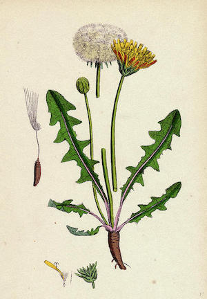
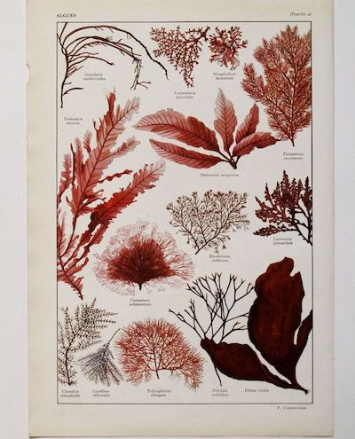

Holistic approach to disease relies on natural botanical remedies to cleanse and detoxify the body, bringing it back to a more alkaline state from the acidity that causes disease and pathology. Natural vegetable cell food compounds are an important part of that change. By removing accumulated toxins, and replacing depleted minerals, cell foods can rejuvenate damaged cell tissue, especially those eroded by acidity. The primary organs affected are the skin, liver, gall bladder, lymph glands, kidneys and the colon. With inclusive nutritional programs designed, not around the pathology, but around the whole person and their diet and health, cell foods are an important part of the nutritional environment of every recovering, responsible and healthy individual.
According to Western medical research, diseases are a result of the host being infected with a “germ”, “virus”, or “bacteria”. In their approach in treating these “infestations”, inorganic, carcinogenic chemicals are employed. Our research immediately uncovers flaws in their premise through basic deductive reasoning. By consistently utilizing the same premise and methods, they have consistently yielded ineffective results. In essence, in the 400-year tradition of the European philosophy of medicine, their approach in treating disease has yet to produce any cures.
In contrast, as we examine an African approach to disease, it diametrically opposes the present Western approach. Specifically, the African Bio-mineral Balance refutes the germ/virus/bacteria premise. Our research reveals that all manifestation of disease finds its genesis when and where the mucous membrane has been compromised. For example, if there is excess mucous in the bronchial tubes, the disease is Bronchitis; if it is in the lungs, the disease is Pneumonia; in the pancreatic duct, it is Diabetes; in the joints Arthritis. All of the African Bio-mineral Balance compounds are comprised of natural plants; which means its constitution is of an alkaline nature. This is important- and instrumental in our success in reversing pathologies- because disease can only exist in an environment that is acid; thus it is inconsistent to utilize inorganic substances when treating disease because they are of an acid base. Only consistent use of natural botanical remedies will effectively cleanse and detoxify a diseased body, reversing it to its intended alkaline state.
Our system of nutrition goes even further. In addition to removing the accumulation of years of toxins, the African Bio-mineral Balance replaces depleted minerals and rejuvenates damaged cell tissue eroded by the acid, diseased state. The primary organs of elimination are the skin, liver, gall bladder, lymph glands, kidneys and the colon. If all toxins are eliminated from the above mentioned organs they will be recycled throughout the entire body, manifesting disease. Eventually the body breaks down in the weakest organs due to its inability to dispel the influence of toxins. The colon is the most important organ and must be cleansed by detoxifying before any disease can be reversed. If the colon is the only organ cleansed and detoxified the other major organs will be left toxic, thus leaving the disease in the body.